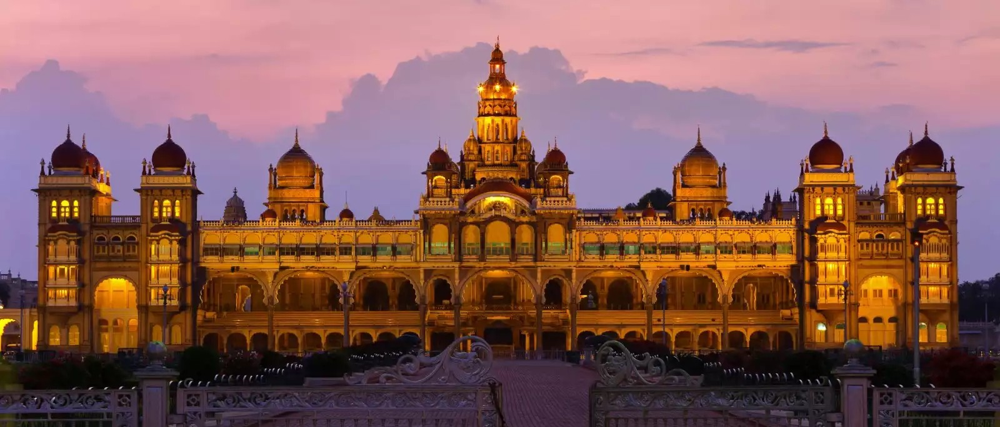
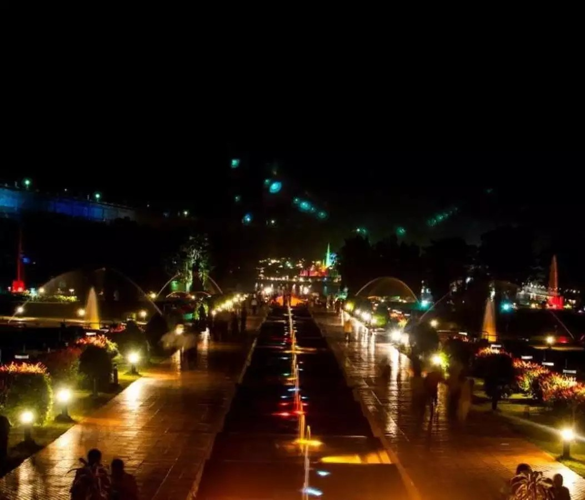

Must-Visit Places

Mysore Palace
Magnificent royal palace featuring Indo-Saracenic architecture and stunning interiors.

Chamundi Hills
Sacred hill with ancient temple and panoramic views of the city.

Brindavan Gardens
Beautiful gardens with musical fountains and scenic beauty.